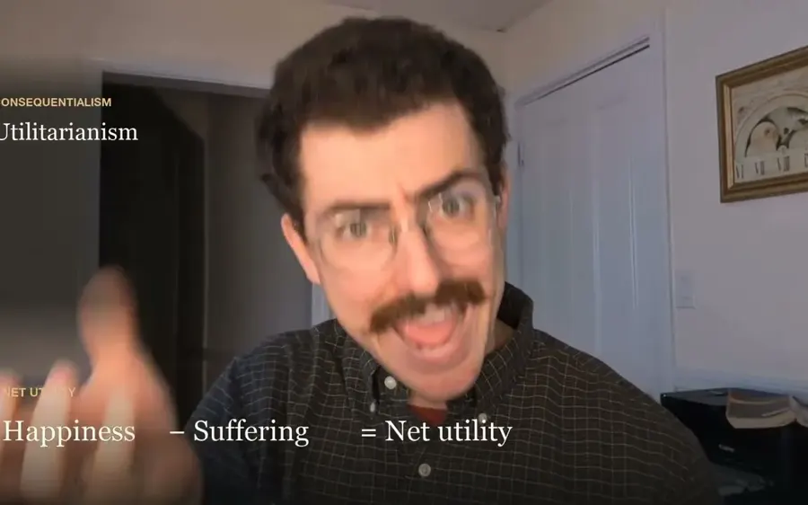
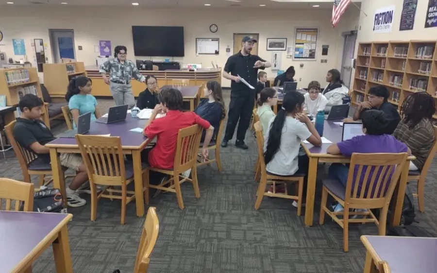

Classes and Tutoring
Live philosophy, ethics, logic and debate, led by graduate philosophers, for individual students, groups and whole schools. Every plan is built around the student: their goals, their level and their schedule.
Who are the classes for?
Live online classes for ages 11–18.
- If you arean individual studentOn your ownOne-on-one tutoring or a place in a small class, planned around your goals and schedule.Sign up for a class →
- If you area group of three or moreBring a groupThree or more students who want to learn together? We’ll design a course for you.Enquire as a group →
- If you area school or institutionSchool or institutionCoaching for a team, classes for a cohort, or one invoice for multiple students.School enquiry →
- If you area school that wants a visitWe come to your schoolTalks, workshops and hands-on help starting an ethics or philosophy team, in person or online.Request a visit →
- If you area homeschool familyHomeschoolLive online philosophy, critical thinking, ethics and logic for homeschool students aged 11 to 18. We design a course around each learner.Homeschool classes →




What you can study
See all current classesSmall groups or one-on-one, with a coach who specialises in the subject.
Introduction to philosophy
The big questions: knowledge, mind, freedom, God and the good life.
Details →CompetitionsEthics Bowl & Ethics Olympiad prep
Case analysis, presentation structure and judge-ready answers for your team.
Details →LogicFormal logic
Learn to test any argument: propositional and predicate logic, proofs and fallacies.
Details →DebatePublic Forum debate
Case writing, rebuttals, crossfire and tournament strategy.
Details →EthicsEthics for high school students
Utilitarianism, Kant, virtue ethics, and how to apply them to real cases.
Details →AIPhilosophy & ethics of AI
Can machines think? Should they have rights? Which jobs should AI never do?
Details →OlympiadPhilosophy Olympiad prep
Advanced philosophical essay writing for the International Philosophy Olympiad.
Details →EssaysEssay coaching
For the John Locke and similar essay competitions.
Details →From first message to first class
Tell us what you want
Sign up for a class, or book a free planning call. Tell us which classes interest you and when you’re free.
Get your plan
We suggest a group class or a one-on-one coach. New groups start as soon as 4 students at a similar level sign up.
Start learning
Live classes on Zoom, with readings, discussion and feedback from your coach, in a time slot that fits your time zone.
Taught by graduate philosophers
Meet the whole teamEvery coach has a specialty. Tell us what you want to learn and we’ll match you with the right person.

Archie Stapleton
Co-Founder & Director
MTS, Harvard Divinity School. Ethics, philosophy of religion, Ethics Bowl and competition prep.

Zach Bloom
Co-Founder & Head Coach
MA Philosophy, UBC. Logic specialist; metaphysics, epistemology and PF debate.

Jack M. Wells
PhD candidate, The New School
Political philosophy, philosophy of law and the history of philosophy; longtime Ethics Olympiad judge.
Mika Smith
PhD student, UC San Diego
Philosophy of science, AI and epistemology.

Calvin Xu
BA Philosophy, Northwestern
JD candidate, University of Chicago. Ethics, Ethics Bowl and debate; led the first Canadian team at the International Ethics Olympiad to a silver medal.
Fiona Shen
Economics & Public Affairs, Brown
PF debate, critical thinking and economics; four years coaching debate.
Cost shouldn’t be the barrier
Apply for free or reduced access to classes through our need-based scholarship. Schools raising money for a team can also use our Fund Your Team page.
Not sure where to start?
Reach out and we’ll put together the right class and timing.